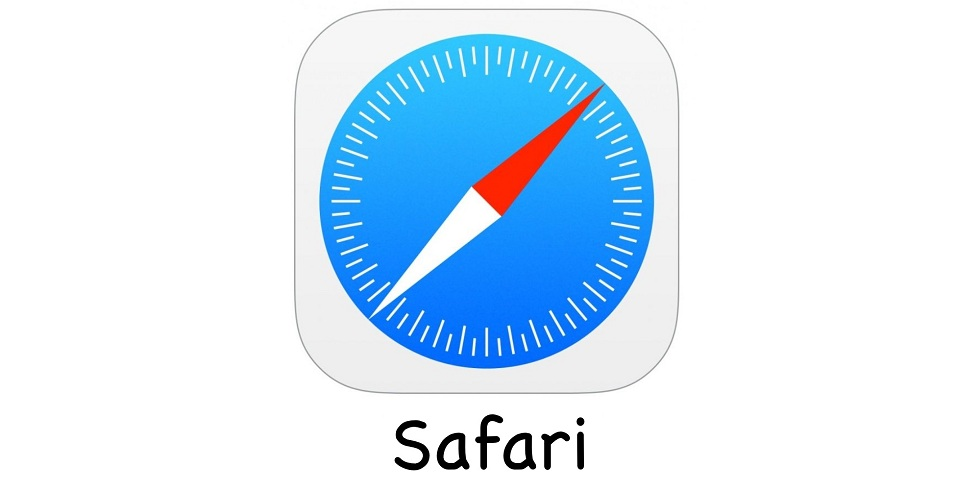

Safari es un navegador web desarrollado por Apple. Está integrado en macOS, iOS y iPadOS, y utiliza el motor de navegador de código abierto de Apple, WebKit, que se derivó de KHTML. Safari se introdujo en Mac OS X Panther en enero de 2003. Se incluyó con el iPhone desde la primera generación de este último, que salió en 2007.
